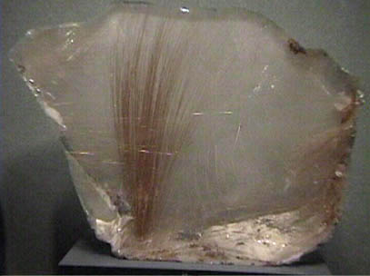
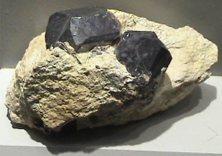
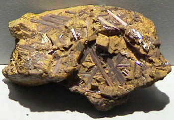
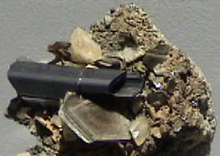
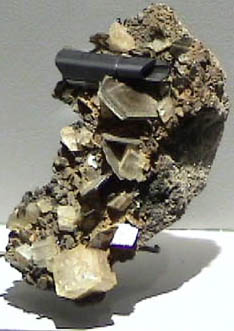
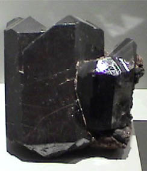

Rutile
|  | This sample of rutile is on display at the Smithsonian Museum of Natural History. Rutile is titanium dioxide, TiO2, and it appears as fine red crystals within the larger clear quartz mineral. The size of the sample is about 15-20 cm high.
|
The inclusion of microscopic needle crystals of rutile in sapphires and sometimes rubies gives to those gems a remarkable six-sided "star" reflection effect. The needle crystals intersect at angles of 60° to provide the star effect which is prominent enough to lead to the description "star sapphire" for some specimens of sapphire.
Rutile is one of the minerals which exhibit significant double refraction.
| This sample of rutile is from Champion Mine, Mono County, California. It measures about 10x9 cm. |

|
|  | This sample of rutile is from Boiling Springs, North Carolina and measures about10x8 cm. It is formed with goethite.
|
| This sample of rutile is from Milholland's Mill, Alexander County, North Carolina. It measures about 5x9 cm and is found with muscovite and orthoclase.
 |

|
|  | This sample of rutile is from Graves Mountain, Georgia and measures about10x15 cm.
|
|
Index |